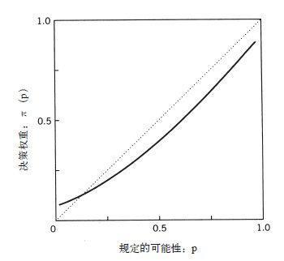

概率的心理物理学
到目前为止，我们假设伯努利的期望原则所依据的是某种不确定前景的价值或效用，该原则是通过增加每种可能结果的效用而得来的，每个结果的效用又都是通过概率来加以权衡的。为了测试这个假设，我们再从心理物理学角度出发。将当前的状态价值设为零，想象有份价值300美元的收益，我们将这份收益的价值设为1。现在假设你只有一张彩票，且该彩票的单次奖励是300美元。这张彩票的价值会怎样随着赢得奖励的可能性函数而改变？除了赌一把的效用外，这种前景的价值一定会在零（当赢得的概率为零时）和1（确定赢得300美元）之间变化。
按照直觉，彩票的价值并不是获胜概率的线性函数，正如期望原则推导出的那样。从零到5%的增长比从30%到35%的增长有更大的影响力，而相对于从95%到100%的增长，影响就显得小了。综合考虑各方面可得出种类—边界效应：即从不可能到可能，或从可能到确定的变化比变化范围内的变化有更大的影响力。这种假设体现在图B–2的曲线上，该曲线以函数的形式标出了对某事件众多可能性的权重。该图最大的特点是关于规定的可能性，决策权重会成回归状态。除了终点附近，获胜的概率每增加0.05，赢得奖励的价值就会增长不到5%。我们接下来要研究的就是在有风险的选择中，对偏向的心理物理学假设的含义。
在该图中，决策权重在很大的范围内要低于相应的概率。过低权衡确定事件的中等或高概率会降低能得到奖励的赌局的吸引力，从而在会有所得的选择中使人们选择风险规避；同样，在损失的情况下，也会通过减弱对赌局中的损失厌恶而选择风险追求。然而，小概率事件常被过高权衡，且非常小的概率不会被过高权衡或完全忽视，使得这个区域内的决策权重很不稳定。对低概率过高权衡推翻了前面描述的规律模式：它提高了风险大的赌注的价值，提高了对于小概率的严重损失的厌恶值。最终，人们通常在未必有收益的情况下选择风险追求，在未必有损失的情况下选择风险规避。因此，决策权重的特点解释了彩票和保险政策吸引人的原因。

图B-2
决策权重的非线性必然会违背不变性，下列两个问题就说明了这一点：
问题5（N=85）：假想有如下两个阶段的游戏。在第一个阶段，有75%的概率在游戏最后什么也得不到，有25%的概率会进入到第二个阶段。如果你进入第二个阶段，可以在下面两个选项中作出选择：
A.肯定会获得30美元。（74%）
B.80%的概率获得45美元。（26%）
你必须在游戏开始前作出选择，也就是说，要在第一个阶段结果出来前选择。
问题6（N=81）：请在下面两个选项中作选择：
C.25%的概率获得30美元。（42%）
D.20%的概率获得45美元。（58%）
由于在问题5中有25%的概率进入到第二个阶段，选项A有25%的概率获得30美元，选项B有80%（0.25×0.80 = 0.20）的概率获得45美元。因此，问题5和问题6在概率和结果方面是相同的。不过，这两种说法的偏向却不同：在问题5中，绝大多数人更喜欢获得小数目钱的高概率选择；而在问题6中，情况却正相反。现实和假设的收益（当前，其结果用钱来表示），生命的拯救和丧失，以及概率过程的非连续表示都已经证实了这种与不变性的违背。
我们认为，不变性之所以被证实不成立是由于两种因素的相互作用：即概率的构架和决策权重的非线性。具体说，我们认为，人们会忽略问题5中的第一个阶段（不管是否已经做出决策，都会产生相同的结果），且只专注于进入第二个阶段后会发生什么。当然，在这种情况下，如果人们选择A，肯定会有所获得；但如果人们更愿意赌一把，就会有80%的概率获得收益。的确，在需要作出连续选择的问题中，人们的选择会和在肯定会获得30美元且有85%的概率获得45美元间的选择相同。因为相比有一般或较高概率的事件来说，确定事件会被过高权衡，肯定会获得30美元的选项就比需要连续做出决策的问题选项更具吸引力。我们将这种现象称为虚假确定性效应，因为实际上不确定的事件在被权衡时会被看成是确定的。
可能性范围的低端也出现了类似的现象。假设你嫌保险费太高而不确定要不要买地震保险。就在你犹豫不决的时候，保险代理说你可以有另一个选择：“你可以选择支付一半的保险费，若地震发生的日子是奇数，你就能获得全额的保险金。”但为什么很多人会认为这种保险没有吸引力呢？图B–2给出了答案。在低概率范围内任意处（设为P点）开始，概率从P降低到P/2的决策权重的影响会比从P/2减小到零的影响小得多。因此，风险降低一半不会使得只需一半的保险费更具吸引力。
对概率保险的厌恶主要有三个原因。第一，传统上对保险的解释是从凹线效用函数的角度出发的，而概率保险显然违背了这一点。按照期望效用函数理论，当普通的保险可被接受时，概率保险应该比普通保险更受欢迎。第二，概率保险有多种形式的防御措施，比如做医疗检查、购置新轮胎或安装防盗系统。这些措施没有完全排除所有的危害，却有效地降低了某些危害的可能性。第三，意外事件的构架也会影响人们是否购买保险。例如，火灾保险不包含洪水造成的灾难，这种保险政策就会被评估为是对某种特定危险（比如火灾）的完全防护，或总财产损失的可能性的降低。
从图B–2可以发现，相对于完全消除危险而言，人们过低估计了降低发生危险的可能性。因此，当将保险被描述成可以消除危险而不只是降低危险时，保险会更具吸引力。的确，正如斯洛维克，费斯科霍夫和利希滕斯坦所说的那样，假设某种疫苗可将发病率从20%降低到10%，若这种疫苗被描述成可治愈一半的病人时，与其被描述成对相同症状的病毒的一半完全有效得到的吸引力相比，其对公众的吸引力更小。